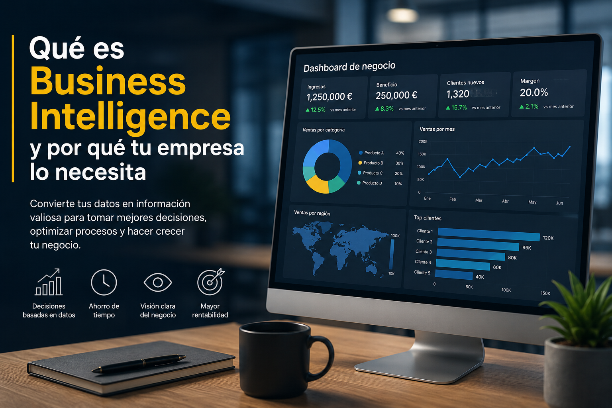

Durante años, las empresas han tomado decisiones basándose principalmente en intuición, experiencia o información dispersa en hojas de cálculo. Sin embargo, en un entorno cada vez más competitivo y digitalizado, esto ya no suele ser suficiente.
Hoy en día, las compañías generan enormes cantidades de información: ventas, clientes, costes, marketing, operaciones, inventario, productividad… El problema no es la falta de datos, sino saber convertir esos datos en decisiones útiles.
Aquí es donde entra en juego el Business Intelligence, también conocido como BI.
El Business Intelligence permite transformar datos en información clara, visual y accionable para ayudar a las empresas a tomar mejores decisiones.
Y aunque muchas personas piensan que esto solo es útil para grandes compañías, la realidad es que las pequeñas y medianas empresas son algunas de las que más pueden beneficiarse.
Business Intelligence es el conjunto de procesos, herramientas y tecnologías que permiten recopilar, organizar, analizar y visualizar datos para facilitar la toma de decisiones.
En otras palabras:
Business Intelligence convierte datos complejos en información comprensible.
Gracias a herramientas como Power BI, las empresas pueden crear dashboards interactivos donde visualizar métricas importantes en tiempo real.
Por ejemplo:
Todo esto puede visualizarse de forma sencilla mediante gráficos, indicadores y paneles interactivos.
Muchas empresas trabajan diariamente con datos sin realmente aprovecharlos.
Es muy habitual encontrar situaciones como:
Cuando esto ocurre, las empresas no solo pierden tiempo. También pierden oportunidades.
Sin una visión clara de la información es mucho más difícil detectar problemas, identificar tendencias o reaccionar rápido ante cambios del negocio.
Y normalmente las consecuencias aparecen poco a poco:
La razón principal es sencilla:
Las empresas que entienden sus datos toman mejores decisiones.
El uso de Business Intelligence permite pasar de trabajar de forma reactiva a trabajar de forma estratégica.
En lugar de esperar a que aparezca un problema, puedes detectarlo antes. En lugar de invertir a ciegas, puedes apoyarte en datos reales.
Además, el Business Intelligence aporta ventajas muy importantes:
Uno de los mayores problemas de muchas empresas es tener la información repartida entre distintos sistemas, Excels y departamentos.
Permite unificar datos y tener una única fuente fiable para analizar el negocio.
Muchas empresas dedican horas cada semana a crear informes manualmente.
Con herramientas como Power BI, los datos pueden actualizarse automáticamente, ahorrando muchísimo tiempo.
No todo el mundo interpreta bien tablas enormes llenas de números.
Los dashboards permiten entender rápidamente qué está ocurriendo mediante gráficos e indicadores visuales.
Tomar decisiones con datos reduce la incertidumbre y ayuda a actuar con mayor seguridad.
A medida que una empresa crece, también crece la complejidad de sus datos.
El Business Intelligence ayuda a mantener el control incluso cuando el negocio aumenta de tamaño.
No. Y de hecho, este es uno de los mayores errores que todavía existen.
Actualmente existen herramientas accesibles y muy potentes que permiten a pequeñas empresas empezar a trabajar con datos sin realizar inversiones enormes.
Muchas veces una pyme puede obtener mejoras importantes simplemente automatizando algunos informes o creando un dashboard con métricas clave.
Por ejemplo:
El objetivo no es tener cientos de gráficos complejos. El objetivo es entender mejor el negocio.
Muchas empresas piensan que implementar BI es un proyecto enorme y complicado, pero no tiene por qué ser así.
De hecho, lo más recomendable suele ser empezar poco a poco.
Una buena forma de comenzar puede ser:
Con pequeños pasos ya es posible generar mucho valor.
Además, una vez que la empresa empieza a trabajar con datos de forma más visual y organizada, normalmente surgen nuevas oportunidades de mejora.
Dentro del mundo del Business Intelligence, una de las herramientas más populares actualmente es Power BI.
Power BI permite:
Además, tiene una gran ventaja: puede adaptarse tanto a pequeñas empresas como a organizaciones mucho más grandes.
Los datos son uno de los activos más valiosos de cualquier empresa. Sin embargo, tener datos no es suficiente. Lo realmente importante es saber interpretarlos y utilizarlos para tomar mejores decisiones.
El Business Intelligence permite precisamente eso: transformar información dispersa en conocimiento útil.
Y en un entorno cada vez más competitivo, las empresas que mejor entienden sus datos suelen tener una gran ventaja.
No importa si tu empresa es pequeña o grande. Empezar a trabajar con datos de forma inteligente puede ayudarte a ahorrar tiempo, detectar oportunidades y tomar decisiones con mayor seguridad.
Puedo ayudarte a automatizar informes, crear dashboards profesionales y transformar datos en decisiones.